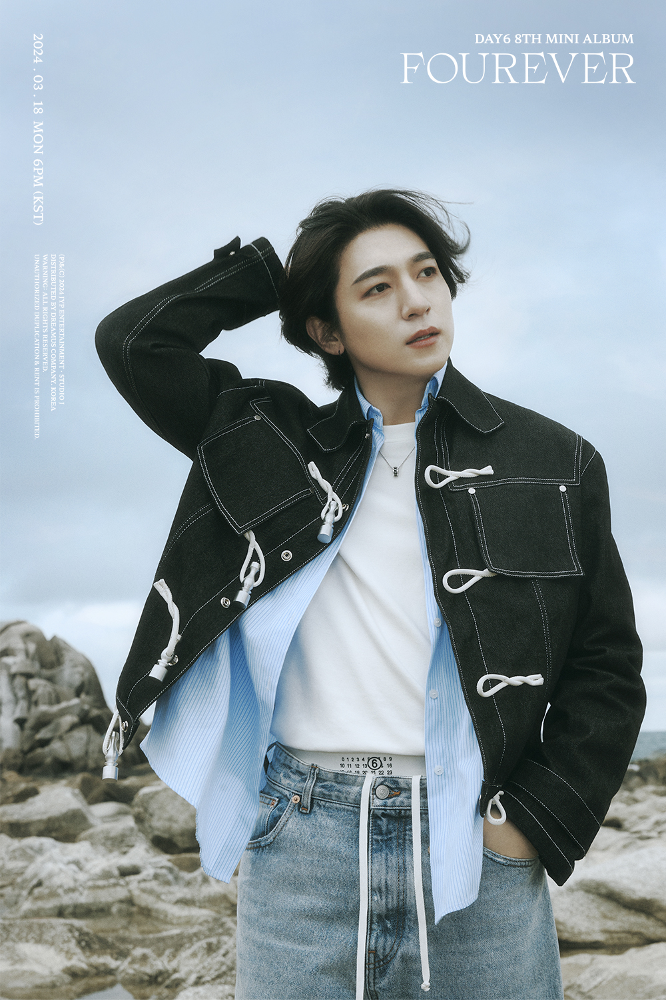
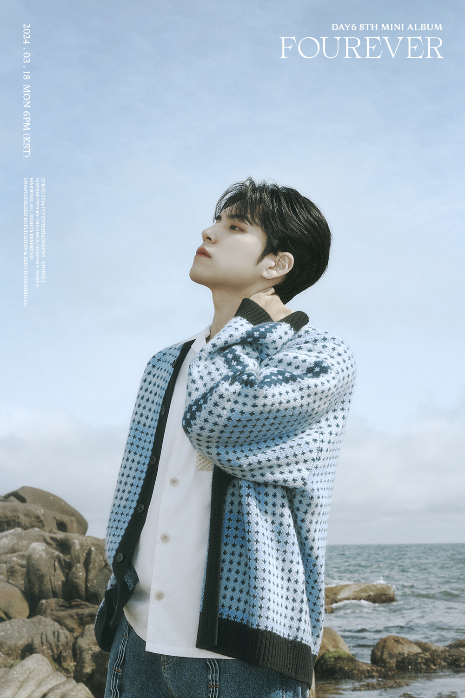
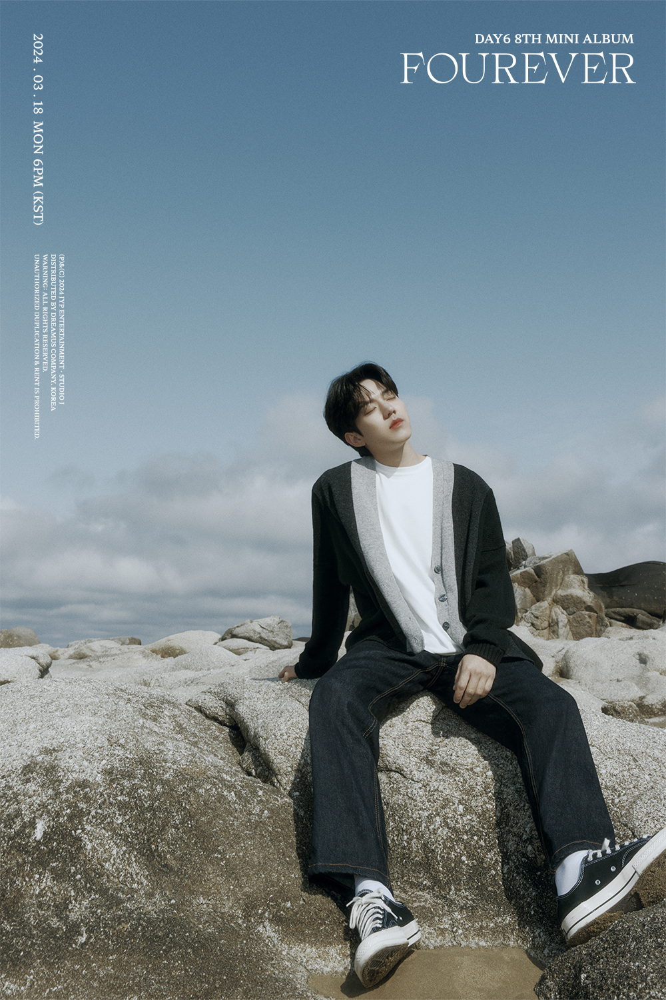
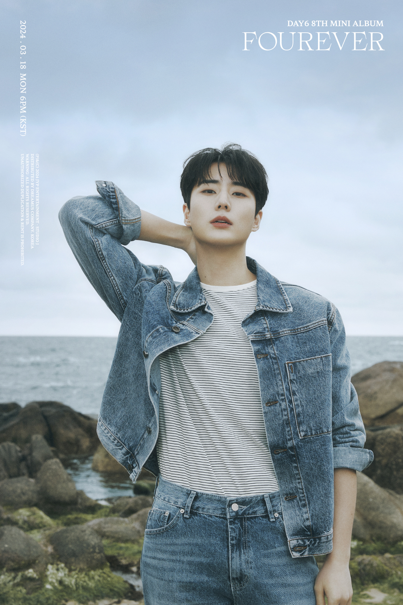

SUNGJIN

Park Sung Jin (박성진). He is the leader of the band, vocalist and guitarist. He was born on January 16th, 1993. He is from Busan, South Korea. On March 8th, 2021, he enlisted in the military for his mandatory military service and was discharged on September 7th, 2022 (Date of the band's annyversary)
WONPIL

Kim Won Pil (김원필). He is vocalist and pianist. He was born on April 28th, 1994. He is from Incheon, South Korea. On March 28th, 2022, he enlisted in the military for his mandatory military service and was discharged on November 27th, 2023.
DOWOON

Yoon Do Woon (윤도운). He is the drummer. He was born on Agust 25th, 1995. He is from Changwon, South Korea. On January 17th, 2022, he enlisted in the military for his mandatory military service and was discharged on July 16th, 2023.
YOUNGK

Kang Young Hyun (강영현). He is vocalist and bassist. He was born on December 19th, 1993. He is from Ilsan, South Korea. On October 12th, 2021, he enlisted in the military for his mandatory military service and was discharged on April 11th, 2023.